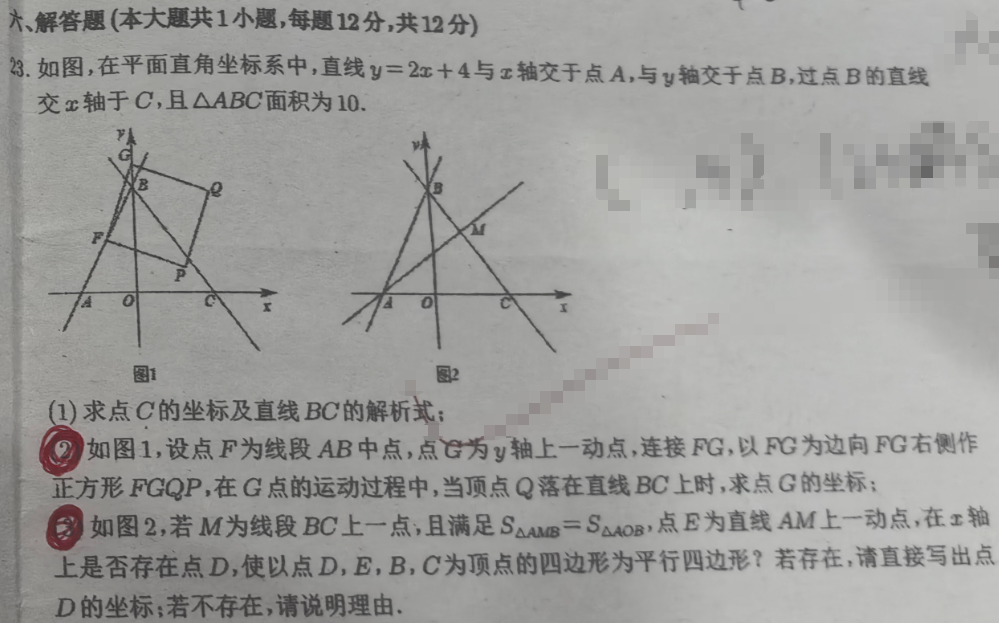
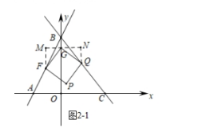
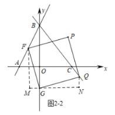

📷 点击查看原图
题目：如图，在平面直角坐标系中，直线 与 轴交于点 ，与 轴交于点 ，过点 的直线交 轴于 ，且 面积为 。
（1）求点 的坐标及直线 的解析式；
（2）如图 1，设点 为线段 中点，点 为 轴上一动点，连接 ，以 为边向 右侧作正方形 ，在 点的运动过程中，当顶点 落在直线 上时，求点 的坐标；
（3）如图 2，若 为线段 上一动点，且满足 ，点 为直线 上一动点。在 轴上是否存在点 ，使以 为顶点的四边形为平行四边形？若存在，请直接写出点 的坐标；若不存在，请说明理由。
| 知识点 | 说明 |
|---|---|
| 坐标轴交点 | 令 求 轴交点；令 求 轴交点 |
| 三角形面积 | ，用 关系求 |
| 待定系数法 | 两点确定一次函数，联立方程组求 |
| 中点坐标 | |
| 一线三直角 | 过 作水平线 ，、 分别作 垂线，形成三个直角 |
| 全等三角形 | （ASA）， 是正方形条件 |
| 分类讨论 | 与 两种情形， 坐标符号不同 |
| 正方形构造 | 以 为边，向其"右侧"作正方形 |
| 代入直线方程 | 把 坐标代入 解析式求 |
| 平行四边形判定 | 3 种顶点排列，对角线互相平分 |
直线 与 轴、 轴分别交于点 、
，
，
设直线 解析式为 ，由
解得
直线 解析式为
，，
设 ，分两种情形讨论：

2正方形FGQP" style="max-width:100%;border-radius:8px;border:1px solid #e2e8f0;">图 2-1： 时正方形 构造
当 时，如图 2-1，点 落在 上时，过 作直线 平行于 轴，过点 、 作该直线的垂线，垂足分别为 、。
四边形 是正方形，
（水平方向上 到 距离为 ），
在直线 上

图 2-2： 时正方形 构造
当 时，同法可得
在直线 上
由标准答案：存在点 ， 的坐标为 、 或 。
题1（2022·江西·解答·12分）：正方形 （边长2）中心为 。将直角三角板顶点置于 并绕 旋转，探究与正方形重叠部分面积。(1)旋转中重叠面积与正方形面积 的关系；(2)当 时判断 形状；当 时求四边形 面积（保留根号）；(3)任意锐角绕 旋转，求重叠面积最值。
💡 答：(1)重叠面积恒为正方形面积的 （证 得全等）；(2)①等边△；②面积为 ；(3)最值用旋转角表示。
题2（2024·江西·解答）：等腰直角 中，双曲线经过点 ，过 作 轴垂线交双曲线于 ，连 。(1)求点 坐标；(2)求直线 的解析式。
💡 答：待定系数法求反比例函数与一次函数解析式。
题3（2025·江西·综合·12分）：正方形 中对角线交于 。(1) 绕 逆时针旋转并放大 倍得到对应三角形，求旋转角与 ；(2)旋转角 放大得 ，求相关比值；(3)菱形中类比；(4)探究数量关系。
💡 答：典型结果旋转角 、（正方形+旋转放缩+全等相似）。
📌 来源：江西省2022年中考数学真题（解答第23题）、江西省2024年中考数学真题（解答第16题）、江西省2025年中考数学真题（综合第22题）